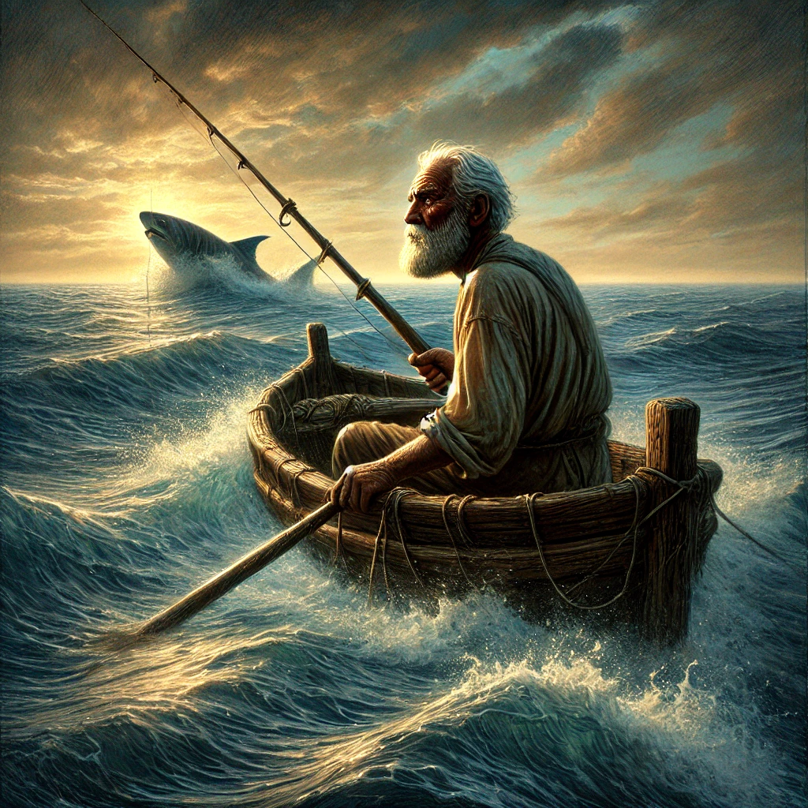
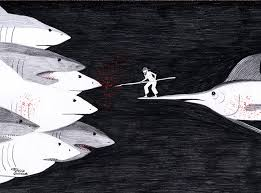
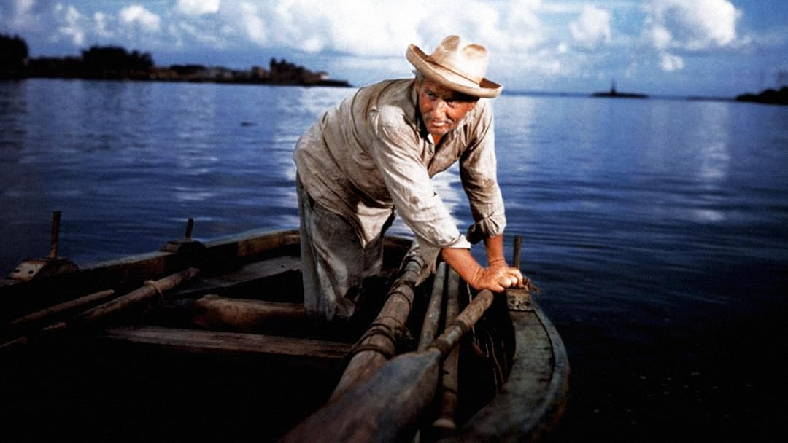

El viejo y el mar narra de Santiago, un pescador anciano de Cuba, que lleva 84 días sin pescar. Decide salir solo al mar para probar suerte y romper su racha de mala suerte. Después de mucho esfuerzo, engancha a un gran pez marlín, y comienza una intensa lucha entre él y el pez. Durante la pelea, Santiago demuestra una gran fuerza manteniendo la admiración por su enemigo. A medida que la batalla se prolonga, Santiago reflexiona sobre su vida, su soledad y su profunda conexión con el mar. La historia destaca la valentía, la dignidad y la relación profunda entre el hombre y la naturaleza, mostrando cómo la lucha y el desafío personal pueden ser una fuente de significado y honor. A través de su travesía, Santiago se enfrenta no solo al pez, sino también a sus propios miedos que tenía en ese momento, como un símbolo de resistencia y esperanza.
Ernest Hemingway, en su obra El viejo y el mar, presenta la eterna lucha entre el hombre y la naturaleza un pez grande. La historia comienza en Santiago, un viejo pescador cubano que, tras una larga racha sin pescar nada, se embarca en una travesía solitaria en su pequeño bote con la esperanza de atrapar un gran pez. Ernest Hemingway, en su obra, presenta la eterna lucha entre el hombre y la naturaleza un pez grande. La historia comienza en Santiago, un viejo pescador cubano que, tras una larga racha sin pescar nada, se embarca en una travesía solitaria en su pequeño bote con la esperanza de atrapar un gran pez.
El personaje llamado Santiago quien tras una larga racha de 84 días sin pescar nada, decide embarcarse solo en su pequeño bote en busca de un gran pez, en unos minutos después engancha a un gigantesco marlín, y comienza una lucha titánica que se extiende por varios días.
El mar es visto como una entidad viva, mientras que el marlín representa un adversario digno que refleja las propias luchas y el viejo pescador muestra la fortaleza el respeto y la admiración por su adversario. Santiago, aunque regresa con las manos vacías, ha logrado una victoria interna, una que reside en el esfuerzo, la dignidad y la lucha, que son más valiosos que cualquier trofeo.
El viejo y el mar es más que la historia de un pescador y su pez grande. Hemingway nos invita a reflexionar sobre el honor y la conexión entre el hombre y la naturaleza. La novela muestra la capacidad humana para enfrentar desafíos con valentía, encontrando belleza y propósito en la lucha. Santiago se convierte en un símbolo de esperanza demostrando que la verdadera victoria de cada desafíos que tenemos en nuestras vidas.
